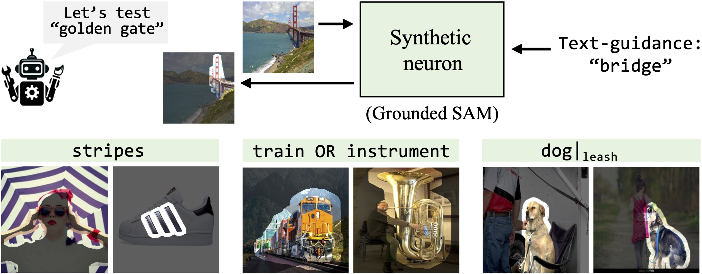

In addition to being useful for applications like spurious feature removal and bias detection, are MAIA descriptions accurate?
We evaluate MAIA on the neuron description paradigm, which appears as a subroutine of many interpretabiltiy procedures (e.g. Bau et al. 2017, Hernandez et al. 2022, Oikarenen & Weng 2022, Bills et al. 2023), and offers common baselines for comparison. Section 4 of the paper shows that MAIA labels outperform baseline methods at predicting behavior of neurons across variety of vision architectures in the wild, and in many cases, are comparable to labels produced by human experts using the MAIA API to run experiments on neurons.
Yet evaluating the absolute accuracy of MAIA's explanations of features in the wild presents a familiar challenge for the field of interpretability: measuring accuracy is difficult when ground truth explanations are unknown. Following the procedure we introduced in FIND (Schwettmann et al. 2023) for validating the performance of interpretability methods on synthetic test systems mimicking real-world behaviors, we construct a set of synthetic vision neurons with known ground-truth selectivity.

We simulate concept detection performed by neurons inside vision models using semantic segmentation. Synthetic neurons are built using an open-set concept detector that combines Grounded DINO (Liu et al., 2023) with SAM (Kirillov et al., 2023) to perform text-guided image segmentation. The ground-truth behavior of each neuron is determined by a text description of the concept(s) the neuron is selective for. MAIA descriptions can thus be compared to ground truth text description of each neuron to evaluate their accuracy. We find that MAIA descriptions match ground truth labels as well as descriptions produced by human experts (see Section 4 of the paper for more details).